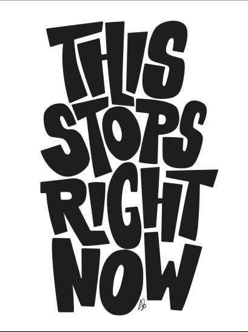
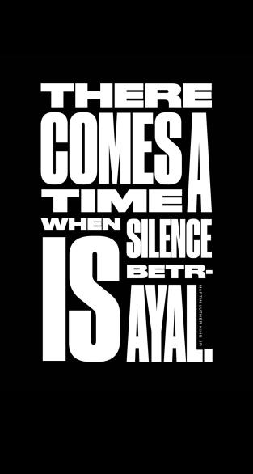

The 1960s Black Power activist formerly known as H. Rap Brown once said that “violence is as American as cherry pie.”
Over the last two weeks, more than a thousand protests—most of them peaceful, though some devolved into violence—have swept across America caused by outrage over the death of George Floyd, recorded as a Minneapolis police officer pressed a knee to his neck for nearly nine minutes while Floyd was handcuffed and lying face down. Floyd was one of approximately 1,100 people killed annually by police use of force in the United States in recent years, according to data compiled by Fatal Encounters, a nonprofit that tracks police-involved deaths since 2000. A disproportionate number of the people killed, like Floyd, are African American.
Casting their eyes to the past, observers search for comparisons to today’s uprisings in the chaos of 1968. But the roots of 2020’s events go far deeper into the last hundred years of American history, which were punctuated by race riots, massacres, and clashes between the police and African Americans. Starting in 1919, three major waves of nationwide uprisings in the 20th century shed light on how the fight for racial equality has grown, how it’s changed, and what has stayed the same.
Red Summer
The first wave came in the early 20th century, culminating in the so-called Red Summer of 1919, when the country was recovering from World War I, bitterly divided by racial and gender tensions and anti-immigration fervor, and ravaged by the deadly Spanish flu epidemic. That year, dozens of violent racial clashes played out with ferocity in at least 25 places including small towns such as Elaine, Arkansas, and Bisbee, Arizona, and in big cities, including Omaha, Nebraska, Chicago, Illinois, and Washington, D.C. During this first wave, hundreds of thousands of African Americans were moving north in what came to be known as the Great Migration, seeking jobs created by wartime spending and fleeing the violence and oppression in the former Confederacy.
In response to these brutal tactics, African Americans invested energy in building up civil rights organizations in the 1920s and 1930s. The National Association for the Advancement of Colored People (NAACP), founded in 1909, expanded its nationwide campaign for racial justice, creating one of the largest mass-membership organizations in the country, with 500,000 members by 1945. Millions of African Americans—in both the urban North and the rural South—gravitated toward organizations that promoted racial pride and self-determination, most notably the United Negro Improvement Association, led by Marcus Garvey. Empowered by the right to vote (a right denied to blacks through voter suppression across most of the South), African Americans in northern cities began to exercise their electoral clout.
Fighting Fascism and Racism
The second mass wave of protest and racial violence came during the disruptive years of the Depression and World War II. In 1941, when civil rights and labor leader A. Philip Randolph threatened a March on Washington to demand that the federal government open up defense jobs to African Americans, President Franklin Roosevelt succumbed to the pressure and signed an order creating the Committee on Fair Employment Practices. The hypocrisy of racism in a country that was fighting a world war for democracy fueled anger among many African Americans, unleashing one of the most intense periods of black political organizing and white opposition ever.
In a second wave of the Great Migration, hundreds of thousands of black workers moved north and west during the war, finding jobs in aircraft factories and shipyards. Newspapers serving African American communities, led by the Pittsburgh Courier, publicized racial discrimination and violence and launched the “Double V” campaign for victory against fascism abroad and against white supremacy at home.
In Mobile, Alabama and Detroit in 1943, whites fearful of rising black militancy and competition for jobs and housing rampaged through black neighborhoods and attacked black workers, a reprise of what had happened in the 1919 Red Summer. More than 240 race riots broke out that year throughout the United States. African Americans were not the only targets; the same year, in Los Angeles, white mobs angry about a new racial threat attacked young Mexican American men. In all of these cities, the police swept in, taking the side of white rioters.
During and after World War II, African Americans actively protested—both peacefully and violently—against racism and police brutality. New York’s City’s Harlem neighborhood was a hotbed of civil rights activism. In August 1943, after a white police officer shot Private Robert Bandy, an African American soldier on leave, angry crowds of blacks outraged at police brutality broke shop windows and clashed with law enforcement officials. In wartime Birmingham, Alabama, African Americans resisted second-class treatment on the city’s buses, clashing with white drivers, passengers, and police. In 1943 and 1944, civil rights activists in Chicago staged sit-ins at restaurants that refused to serve blacks. Those protests snowballed into a nationwide movement between the war and the mid-1960s.
The turbulent Sixties
Fueled by growth of the civil rights movement, a third and enormous wave of urban uprisings swept the country between 1963 and 1968. The protests grew out of decades of grassroots organizing against racial segregation and discrimination in employment, housing, transportation, and commerce, both in the North and the South.
In 1963, Martin Luther King, Jr. and the Southern Christian Leadership Conference marched in Birmingham, Alabama, demanding the desegregation of department stores, restaurants, public restrooms, and drinking fountains. In a violent show of force, Birmingham Commissioner of Public Safety Eugene “Bull” Connor infamously ordered police officers and firefighters to turn guard dogs and fire hoses on nonviolent protestors, many of them schoolchildren. In retaliation for the brutality, angry local blacks calling for self-defense rampaged through the city’s business district. When peaceful demonstrations did not get the desired results and law enforcement officials used force to suppress dissent, protestors often turned to more disruptive tactics.
It was a pattern that would be repeated hundreds of times over the next several years, drawing energy from the rising Black Power movement, which called for black pride, self-defense against racist attacks, and self-determination. Philadelphia, Harlem, and Rochester burned in 1964; Los Angeles in 1965; and Chicago and other cities in 1966, culminating in the “Long Hot Summer” of July 1967, when 163 cities erupted in collective violence over police brutality and indifference to black suffering.
African Americans burned and looted stores and faced violent retribution on the part of big cities’ nearly all-white police forces. In Newark, New Jersey, 34 people died, 23 of them at the hands of the police. In Detroit, 43 people died, most of them shot by some 17,000 police, National Guard, and military troops sent to put down the rebellion. In April 1968, sorrow and fury over Martin Luther King, Jr.’s assassination turned to uprisings in which more than 100 cities were burned.
The 1960s uprisings differed from their precursors in 1919 and 1943. The later demonstrations—both nonviolent and disruptive—were led by African Americans, unlike the race riots in Chicago, Tulsa, Detroit, and Los Angeles that were instigated by white mobs. In the 1960s, almost all looting and burning happened in African American neighborhoods, targeting mostly white-owned local shops accused of overcharging black customers for inferior goods. Some whites joined in vandalizing stores, but the crowds and the business districts affected were overwhelmingly black.
The only whites out on the streets in sizeable numbers were law enforcement officials, who fueled the flames of discontent by beating and shooting protestors. Many white Americans—including presidential candidates Richard M. Nixon and George Wallace—cheered the police. Those who were more sympathetic to black protesters included prominent members of the blue-ribbon, bipartisan Kerner Commission, established by President Lyndon B, Johnson to investigate the causes of the 1960s uprisings. Its 11 members, including the nation’s only black U.S. Senator, Edward Brooke (R-Mass), and NAACP Executive Director Roy Wilkins, published a bestselling report that concluded that for many blacks, “police have come to symbolize white power, white racism, and white repression.”
Changing face of protest
In the decades that followed 1968, outbreaks of protest and conflict were more geographically isolated, but their causes and fury foreshadowed the events of 2020. In 1992, mass protests and riots exploded in Los Angeles after the acquittal of white police officers who were captured on video brutally beating black motorist Rodney King. Twenty years later, the deaths of more African Americans at the hands of police ignited public outrage, mass protests, and sometimes attacks on white-owned businesses. Activists around the country loosely banded together in the Black Lives Matter movement, founded in 2013 by Alicia Garza, Patrisse Cullors, and Opal Tometi in response to the acquittal of a Florida man who fatally shot an unarmed 17-year-old black student, Trayvon Martin, who was visiting relatives in a gated community. The coalition uses protests, social media, and publicity to shine a bright light on police violence against African Americans.
2020’s uprisings resemble those of 1919, 1943, and 1968 in certain respects: They grow out of simmering hatreds seeded by the long, festering history of white violence and police brutality against African Americans that has taken hundreds of lives of per year, including Floyd, Breonna Taylor, and Ahmaud Arbery, three of the most recent victims. Most of 2020’s protests have been peaceful, early reports have found, with a fraction becoming violent.
But more than ever before, today’s demonstrations are markedly interracial—African American, Asian American, Latinx, and white faces, covered by masks to prevent the spread of COVID-19, appear in city centers, blockaded across bridges and highways, and gathered in front of the White House. It suggests a new phase of opposition that is uniting groups who did not have much in common for most of American history. In cases where conflicts have erupted, those assaulted, tear-gassed, or shot with rubber bullets are of all races.
The geography of violence and looting looks different in 2020 as well. Clashes of the past happened mostly in black neighborhoods; today, they have often started and spread to wealthy downtowns and suburban shopping malls. Looters have gone after local shops and global chains in wealthy neighborhoods such as Rodeo Drive in Beverly Hills, Soho in New York, and Buckhead in Atlanta. We can’t yet wholly grasp the significance of demonstrators spraying graffiti that say both “Black Lives Matter” and “Eat the Rich” but amidst soaring unemployment and ongoing racial injustice, we might be seeing something that is both old and new.
The solidarity of today’s protesters transcends the bloody racial divides of the past and may be a springboard for more sweeping reforms. George Floyd’s death has sparked a global movement, with statues of slaveowners being torn down from Bristol, England to Richmond, Virginia; anti-police protestors taking the knee from Seattle to Rio de Janeiro and Rome; and U.S. public officials debating whether to defund or rebuild their police forces from the ground up.
It remains to be seen if the uprisings of 2020 will resolve the long-standing issues of racial injustice fought again and again on America’s streets, but when many races march together rather than face off, the arc of history may be bending toward justice again.
Source: National Geographic